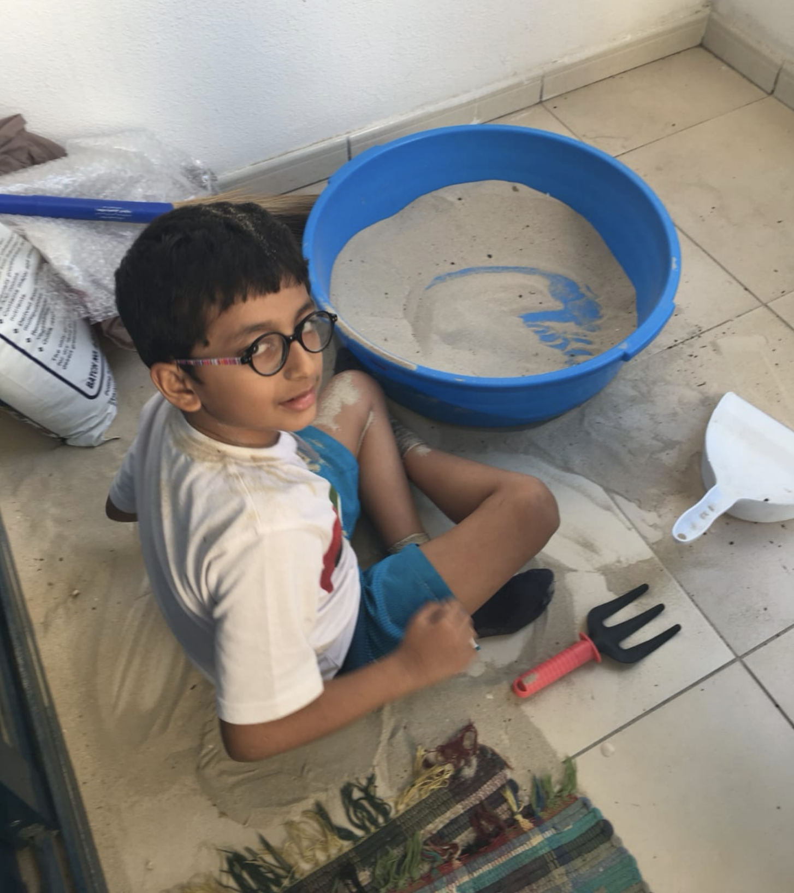
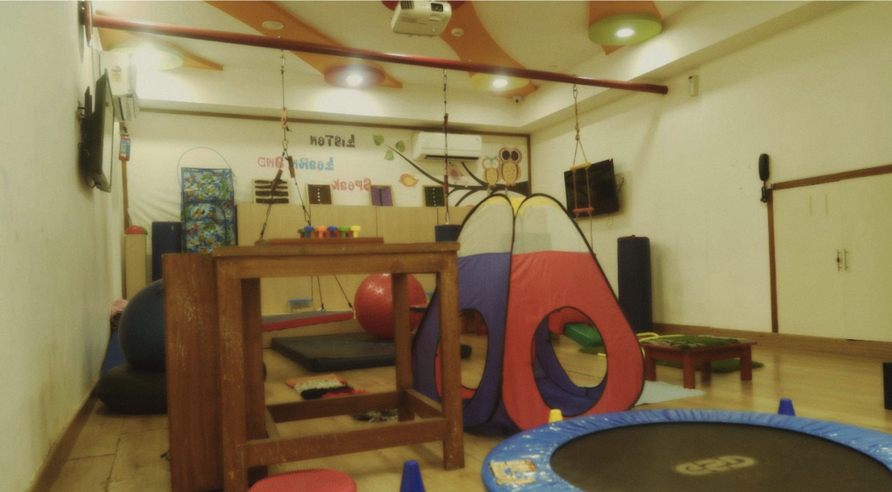
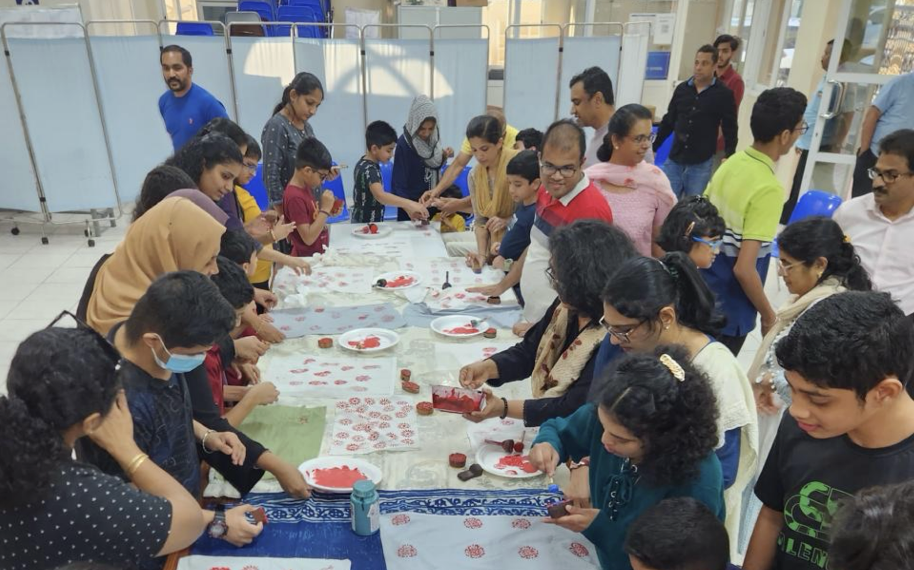
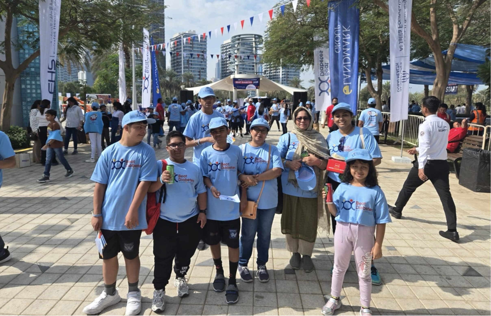

We have made countless scientific and societal breakthroughs to accommodate physical disabilities as a society, as seen in the increasing presence of wheelchair accessibility ramps and designated parking spaces. On the contrary, the challenges faced by those with neurological disabilities often go overlooked because their disabilities are "invisible," and their needs remain primarily unseen and unaddressed. This invisibility translates into a lack of tangible support structures in everyday life as they don't receive the same level of attention and resources.
As part of my research on stratification due to mental disabilities and their intersectionalities, I interviewed "Priya" (pseudonym), a mother of two who shared her family's journey following her son's autism diagnosis.

Priya's son playing in the homemade desensory room created by his parents to help him feel engaged through sensory play.
"Back then, we had no idea that this was going to be a lifelong disorder. It takes time to adjust and move forward. [There were] lots of changes in financial matters. There was less support since our families were far away in India. We were all alone. It takes one to two years just to understand what autism really is and how to adjust your lifestyle."
— Priya
She described the significant personal challenges she had to go through following her son's autism diagnosis in the US, where, despite access to better early intervention, she had to make the difficult decision to leave her job to become her son's full-time caregiver.
A significant disproportion in caregiving responsibilities often falls on women, usually mothers. Priya's decision to quit their job to care for their son is a shared experience. The societal expectation to be the primary caretaker and the resulting limitations in their careers lead to noteworthy personal and financial challenges for mothers. There is often a lot of social stigma attributed to being a mother of a disabled child, frequently blamed for their child's disability.
"We used to get a lot of stares from people. There's a lot of shame and a lack of acceptance [of mental disabilities] in rural areas. We used to get a lot of blame from others. It's because of poor parenting, [it's the] mother's fault, it's Pitru dosh, perform rituals it will be resolved, and so on."
— Priya
There is a noticeable lack of acceptance and sense of shame associated with mental disabilities in rural areas. This social isolation not only limits access to essential support and opportunities for neurodivergent individuals but also causes a significant emotional toll on their families and caretakers.
"The 13–14 years have definitely made it easier for me to talk about it more. It's been more than a decade since his diagnosis. I did have a problem talking about it during the first one or two years. I used to get really emotional and teary-eyed, but you get used to it after dealing with it for so long."
— Priya
Following their son's autism diagnosis, the family's relocation to Bangalore to be nearer family support and access to early intervention involved not only a location change but immense financial adjustments for the well-being of their son.

A sensory playroom at a children's autism healthcare clinic, designed to support therapy through play.
"Not everyone can spend the money on therapies. It's definitely not cheap. It's certainly not the case for everyone. The rest have to rely on family."
— Priya
The ability to migrate and access early intervention after a diagnosis is usually not universally available. This requires significant financial resources and the capacity to relocate. She recognised that their access to this level of care was fortunate and limited to an "elite few."
Socioeconomic factors like wealth and location highly influence access to support for neurodivergent people in India. While metropolitan cities like Bangalore and Mumbai have more resources, rural areas often lack these facilities and show immense stigma regarding mental disabilities.
Access to autism treatment and support significantly depends on government policies and location. In this way, families from wealthier countries and localities can avail themselves of better facilities for their children. Even then, with age, there is a swift decline in the availability of support for neurodivergent children. This is notably seen during the transition from adolescence to adulthood. While inclusive education efforts like the No Child Left Behind Act exist, support systems die significantly after adolescence. As a result, many students are either kicked out of the school system or choose to drop out around 8th and 10th grade. With no school system, the child's social interaction is minimal, placing all of the long-term care and the responsibility of engagement on parents.
"You need to be able to engage neurodivergent kids. Since they drop out, they don't have anything to engage with, so it's on the parents to ensure they stay engaged."
— Priya

Parent-initiated vocational skills to help teenagers with autism find purpose and engagement beyond school.
This lack of support post-adolescence leads to the crucial question of long-term care for neurodivergent individuals. What happens after they age out of typical support systems? What happens when parents don't have the finances saved up to provide care? There is a lack of adequate and affordable long-term support after these children grow out of their neurological developmental phase. Parents are forced to face the constant burden of planning financially for their children's lifelong future needs, especially since many neurodivergent individuals need continuous support well into their adulthood. While some changes are emerging, long-term care significantly lacks the resources and attention compared to the post-diagnosis and early intervention stages.
There's a noticeable gap in support for neurodivergent children and adults. While new initiatives like autism ashrams in Hyderabad and trusts for adults with disabilities are slowly emerging, these are insufficient to meet the needs of a growing ageing neurodivergent population who usually require lifelong support. It's on the parents to keep thinking about this and preparing for the future.

At a Special Kids Fight for Diabetes marathon event. These events are positive steps towards inclusion for special kids.
When asked what kind of changes she would like to see in the way care for mental disabilities is structured and supported, Priya mentioned that she hopes to see more inclusive and equitable systems that extend beyond childhood therapies and intervention.
"The world is definitely becoming more inclusive when you're speaking in terms of education… but there's not much going on after school and very little happening as support after those teenage years. There needs to be more work when it comes to facilities like vocational guidance and residential homes."
— Priya
True inclusivity will only come when society recognises and addresses the invisible struggles alongside the visible ones and when systemic support no longer depends on privilege, geography, or personal sacrifice. As long as access to care relies on stratification systems like wealth, urban proximity and age, support systems will remain a privilege, not a right. Until then, families like Priya's continue to shoulder the weight of a system still learning how to see and support those it too often overlooks.